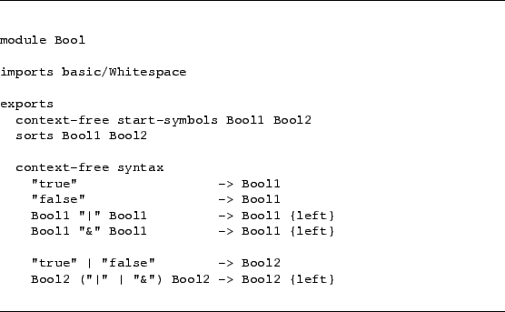

The choice between two symbols can be defined in two different ways: by two
separate syntax rules or by a single syntax rule using an alternative
operator.
Both styles are shown
below[ in Figure ]CODE:alternative-alternatives.
The definition of the binary operators "|" and "&" can
be made more concise as shown by Bool2, however, it is now
impossible to express that "&" has a higher priority
than "|", see
Priorities[ Section ]Priorities
for more details on priority definitions.
Figure 20:
Two ways of defining | and &
|  |
Jurgen Vinju
2006-03-04